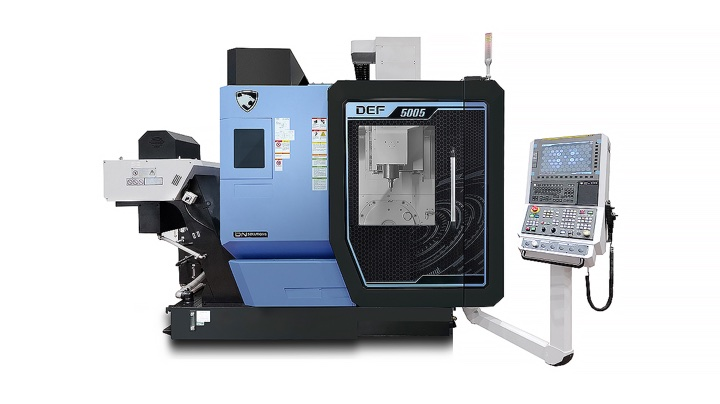

В наличии- Ходы X/Y/Z650/520/480 мм
- СтолØ630 × 450 мм
- Шпиндель15 000 об/мин
- ЧПУFanuc
- Срок поставки из наличиядо 1 месяца
Полные характеристики серии: открыть страницу серии →
Технические характеристики
Характеристики
| Параметр | Значение |
|---|---|
| Перемещение по осям X/Y/Z | 650 / 520 / 480 мм |
| Размер стола | Ø630 × 450 мм |
| Макс. грузоподъёмность стола | 400 кг |
| Макс. скорость шпинделя | 15 000 об/мин {15 000, 20 000} |
| Кол-во инструментальных мест | 30 {40, 60, 120} |
| Хвостовик | MAS403 BT40 |
| Система ЧПУ | Fanuc |
Протокол испытаний: геометрическая точность (проверка 22.05.2026, все пункты — годен)
| Проверка | Допуск ISO | Допуск DN Solutions |
|---|---|---|
| Прямолинейность движения по осям X, Y, Z | 0,010 / 500 мм | 0,005 / 300 мм |
| Перпендикулярность осей ZX и YZ | 0,020 / 500 мм | 0,015 / 300 мм |
| Перпендикулярность осей XY | 0,020 / 500 мм | 0,010 / 300 мм |
| Ось шпинделя к оси X (плоскость XZ) | 0,020 / 300 мм | 0,010 / 300 мм |
| Ось шпинделя к оси Y (плоскость YZ) | 0,020 / 300 мм | 0,015 / 300 мм |
| Ось C к осям X и Y | 0,020 / 300 мм | 0,010 / 300 мм |
| Параллельность стола осям X и Y | 0,020 / 500 мм | 0,010 / 300 мм |
| Параллельность оси шпинделя оси Z (XZ / YZ) | 0,020 / 300 мм | 0,010 / 0,015 на 300 мм |
| Торцевое биение шпинделя | 0,01 мм | 0,005 мм |
| Биение конуса шпинделя: у торца / на расстоянии 300 мм | 0,01 мм / 0,020 на 300 мм | 0,005 мм / 0,012 на 300 мм |
| Биение поверхности стола | — | 0,020 на Ø300 мм |
Протокол испытаний: точность позиционирования (ход X/Y/Z 650/520/480 мм, все пункты — годен)
| Ось | Позиционирование ISO | Позиционирование DN | Повторяемость ISO | Повторяемость DN |
|---|---|---|---|---|
| X | 0,025 мм | 0,008 мм | 0,015 мм | 0,005 мм |
| Y | 0,025 мм | 0,008 мм | 0,015 мм | 0,005 мм |
| Z | 0,022 мм | 0,007 мм | 0,012 мм | 0,004 мм |
| B | 28″ | 9″ | 16″ | 5″ |
| C | 28″ | 9″ | 16″ | 5″ |
Круговая интерполяция (ballbar, Ø200 мм, подача 1000 мм/мин): допуск ISO 0,050 мм, допуск DN Solutions 0,010 мм, по часовой, против часовой и двунаправленно — годен.
Станок на складе. Технические характеристики, комплектацию и сроки уточняйте у менеджера. Характеристики приведены по данным производителя; точную конфигурацию, цену и срок поставки уточняйте у менеджера.